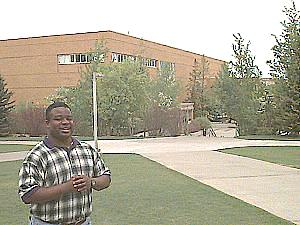

David O. McKay Library  |
Kamber is busy doing research in the David O. McKay Library. Besides books and study areas, the library also has an extensive computer lab for student use. A family history library is very popular for those wanting to learn more about their ancestors. The library is also home for a media center for student projects. |